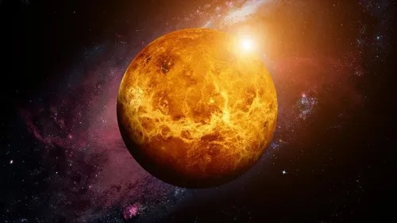
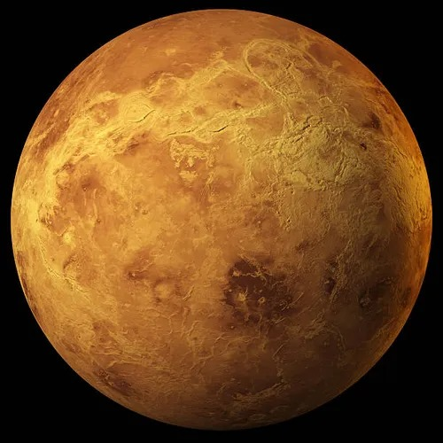
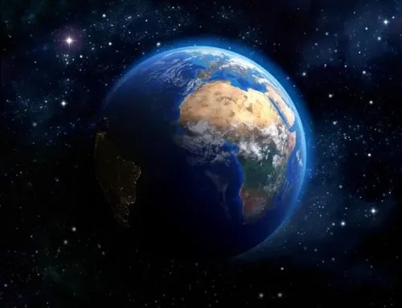
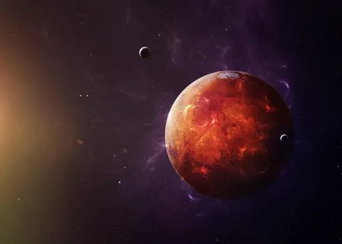
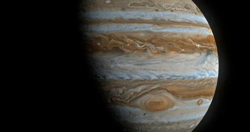
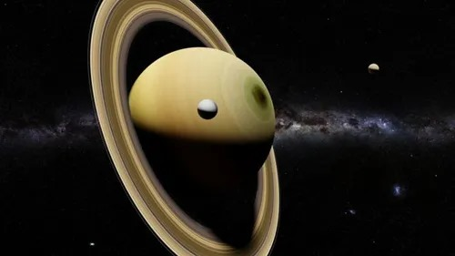
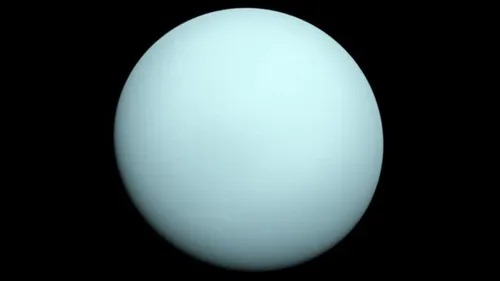
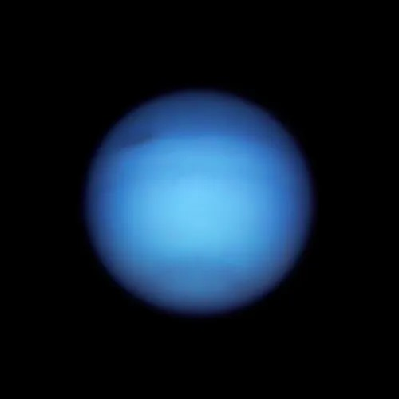

Es un gran objeto espacial que gira alrededor del sol o de una estrella. Los planetas, antes de formarse como tales, estaban compuestos de discos de gas y polvo que giraban en torno a las estrellas jóvenes. Por acción de la gravedad, fueron atrayendo más gas y polvo dando origen a sus estructuras actuales.
1. Deben orbitar alrededor del Sol.
2. Tienen que ser lo suficientemente grandes para tener la gravedad como para formar una estructura esférica.
3. Deben ser lo suficientemente grandes para que la gravedad despeje los objetos de similar tamaño cercanos a su órbita alrededor del Sol
Son:
| Nombre | Imagen |
|---|---|
| Mercurio |  |
| Venus |  |
| Tierra |  |
| Marte |  |
| Júpiter |  |
| Saturno |  |
| Urano |  |
| Neptuno |  |
| Nombre | Imagen |
Para más información da clic en el siguiente botón, el cual lo llevara aún vídeo.